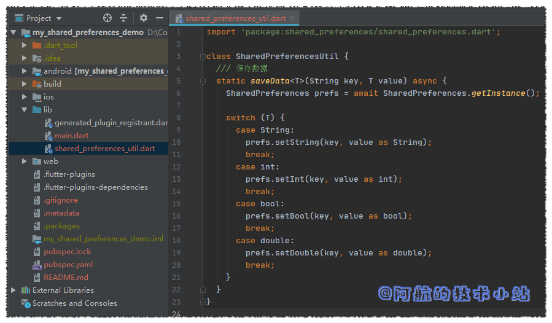

我们在做APP开发时, 经常会涉及到用户的 数据存储(比如保存用户登录token、用户的某些偏好设置等). 开发过Android的朋友应该知道有 SharedPreferences. 在 Flutter 中, 同样为我们提供了十分相似的(甚至名字都一样)组件, 为我们提供数据存储的能力.
本篇教程将用一个简单的小Demo, 让你完全掌握 数据存储之SharedPreferences 的用法.
若图片展示异常, 请访问我的官方博客
效果
有图有真相, 我们先来看一下我们最终的效果:

SharedPreferences最终效果
仓库地址
所有源码(含注释)均已上传至开源仓库:
准备工作
开发环境
本博客的环境一览:
| 环境 | 版本号 |
|---|---|
| Flutter | 1.14.6 beta |
| Dart | 2.8.0-dev.5.0 |
| Android Studio | 3.5.2 |
注意您的环境和文中的差异, 避免出现不兼容的情况哦!
需具备的条件
要顺利阅读本文, 假定您已经具备以下条件:
- 一台电脑(能同时运行IDE、APP模拟器).
Android Studio或VSCode(或任何你喜欢的代码编辑器).Flutter开发环境.- 您掌握了
Flutter的开发基础(至少了解目录结构、Dart语言基本知识).
实战开始
创建Flutter项目
创建一个新的Flutter项目, 命名为my_shared_preferences_demo(您可以随意起名, 但是在下面也要替换名字为您自己的).
注意: Flutter项目名不要和引入的某个第三方库重名, 否则会报:
A package may not list itself as a dependency详见这里
代码截图:

初始化项目
清理代码
因为我们的项目过于简单, 暂时不需要进行测试. 删除./test目录:

清理test目录
避免冗余代码误导我们, 替换./lib/main.dart为:
import 'package:flutter/material.dart';
void main() => runApp(MyApp());
class MyApp extends StatelessWidget {
@override
Widget build(BuildContext context) {
return MaterialApp(
title: 'SharedPreferences Demo',
home: MyHomePage(title: 'SharedPreferences Demo Page'),
);
}
}
class MyHomePage extends StatefulWidget {
MyHomePage({Key key, this.title}) : super(key: key);
final String title;
@override
_MyHomePageState createState() => _MyHomePageState();
}
class _MyHomePageState extends State {
@override
Widget build(BuildContext context) {
return Scaffold(
appBar: AppBar(
title: Text(widget.title),
),
body: Center(
child: Column(
mainAxisAlignment: MainAxisAlignment.center,
children: [],
),
),
);
}
}
导入 SharedPreferences 第三方库
进入./pubspec.yaml, 添加依赖:
dependencies:
shared_preferences: ^0.5.6+3
你也可以去官网查看最新的shared_preferences
截图:

导入SharedPreferences库
更新包, 在终端中输入(或者点击IDE的更新包的按钮):
flutter packages get
运行项目:

运行APP1
现在, 我们可以正式进行数据存储的操作了!
创建数据读写工具类
实际项目中, 我们定会多次用到数据的读写, 所以封装一个工具类是比较明智的选择.
创建./lib/shared_preferences_util.dart
创建SharedPreferencesUtil类
class SharedPreferencesUtil {
}
因为后面要用到SharedPreferences, 所以导入shared_preferences:
import 'package:shared_preferences/shared_preferences.dart';
数据存储函数 saveData()
添加函数saveData():
/// 保存数据
static saveData(String key, T value) async {
SharedPreferences prefs = await SharedPreferences.getInstance();
switch (T) {
case String:
prefs.setString(key, value as String);
break;
case int:
prefs.setInt(key, value as int);
break;
case bool:
prefs.setBool(key, value as bool);
break;
case double:
prefs.setDouble(key, value as double);
break;
}
}
在定义函数时, 名称后面多了一个"
<T>", 这运用了泛型. 若对此有疑问, 请自行搜索"dart 泛型"的相关知识.代码解析: 函数要求传入两个值, key以及value. key为我们要存的值的"名字". 这个名字是唯一的, 后续我们在读取数据的时候也需要传入与这个key. value就是它对应的值. 函数体内, 我们先在首行引入一个SharedPreferences的实例, 便于后续使用. 使用
switch分支, 用来判断传入的泛型类型. 判断完成后, 分别调用prefs.setXXX(key, value), 完成数据存储.

SharedPreferencesUtil01
代码截图:
数据读取函数 getData()
有数据存储函数, 自然也应该有与之对应的数据读取函数, 我们来写:
添加函数getData():
/// 读取数据
static Future getData(String key) async {
SharedPreferences prefs = await SharedPreferences.getInstance();
T res;
switch (T) {
case String:
res = prefs.getString(key) as T;
break;
case int:
res = prefs.getInt(key) as T;
break;
case bool:
res = prefs.getBool(key) as T;
break;
case double:
res = prefs.getDouble(key) as T;
break;
}
return res;
}
代码解析: 与上面的
saveData()函数类似, 同样运用了泛型以及switch. 不同的是读取数据时调用的是prefs.getXXX()
代码截图:

SharedPreferencesUtil02
到这里, 我们几乎已经完成了我们的教程. 反应快的同学应该已经可以直接使用了. 但是阿航的教程要保证其完整性, 让大家都会用, 并且理解为什么这么用. 我们来绘制APP界面, 更直观的测试!
绘制用于测试工具类的简单界面
回到./lib/main.dart, 我们来增加几个按钮和输入框.
导入SharedPreferencesUtil
先导入SharedPreferencesUtil方便后续使用:
import 'package:my_shared_preferences_demo/shared_preferences_util.dart';
定义实例变量
在_MyHomePageState定义实例变量_savedValue和_currentInputValue, 用于记录存储及当前输入的值:
// 保存的值
String _savedValue = "加载中..";
// 当前输入的值
String _currentInputValue;
初始化页面时加载数据.
定义initState(), 在初始化页面时读取已存的数据
@override
void initState() {
super.initState();
SharedPreferencesUtil.getData("myData").then((value) {
setState(() {
_savedValue = value;
});
});
}
代码解析: 可以看到
initState()上有@override, 因为initState()为继承过来的函数. 函数内部先调用super.initState(). 接下来就是通过此前定义的SharedPreferencesUtil获取存储的数据. 因为shared_preferences提供的函数是async(异步)的, 所以需要通过.then()来保证其获取到数据后再进行后续操作. 获取到value后, 存至_savedValue.
接下来就是绘制界面了, 在build->Scaffold->body:Center->child: Column->children中添加以下代码块:
// 用于显示数据的Text
Text(
_savedValue == null ? "无数据" : _savedValue,
style: TextStyle(fontSize: 60, fontWeight: FontWeight.bold),
),
// 用于修改数据的输入框
TextField(
onChanged: (value) {
_currentInputValue = value;
},
// 仅为美观, 增加输入框的边框
decoration: InputDecoration(
contentPadding: EdgeInsets.all(10.0),
border: OutlineInputBorder(
borderRadius: BorderRadius.circular(15.0),
)),
),
Row(
mainAxisAlignment: MainAxisAlignment.center,
children: [
// 用于触发保存数据的按钮
RaisedButton(
child: Text("保存"),
onPressed: () {
// 当点击按钮时, 调用存储数据的函数
SharedPreferencesUtil.saveData(
"myData", _currentInputValue);
// 同时渲染当前显示的保存的值
setState(() {
_savedValue = _currentInputValue;
});
},
),
RaisedButton(
child: Text("清空数据"),
onPressed: () {
// 当点击按钮时, 调用存储数据的函数
SharedPreferencesUtil.saveData("myData", null);
// 同时渲染当前显示的保存的值
setState(() {
_savedValue = "无数据";
});
},
)
],
),
代码解析: 这里虽然看起来代码多一点, 实质上只有1个输入框和2个按钮. 里面没有特别复杂的逻辑, 所有说明都在代码注释中, 可自行查看.
以上的代码截图:

绘制界面代码截图
大功告成
若你的代码没有问题, 运行项目, 效果应该是这样的:

SharedPreferences 最终效果
通过以上的一些步骤, 我们终于完成了 Flutter 数据存储 之 SharedPreference , 是不是很简单?
仓库地址
所有源码(含注释)均已上传至开源仓库:
对文章若有任何问题、异议以及改进建议, 欢迎在下方进行评论. 作者将尽快回复! 若图片展示异常, 欢迎阅读官方博客 .
更多更好的教程/博客/资讯, 欢迎访问我的官网: 阿航的技术小站 .